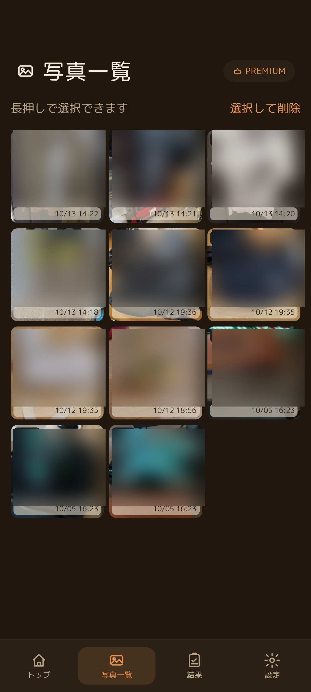
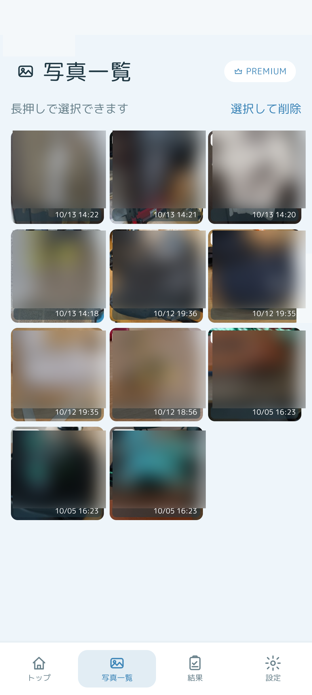
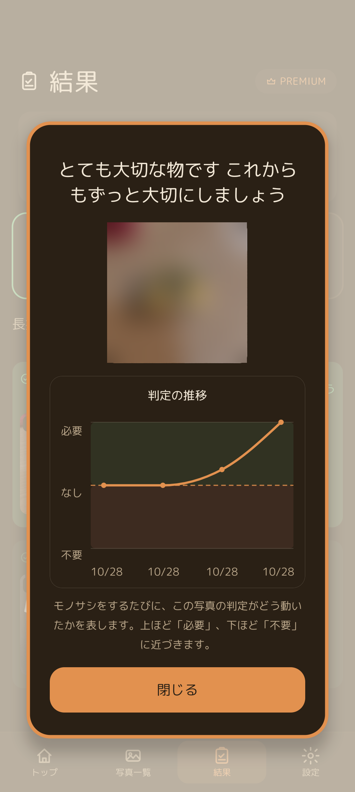
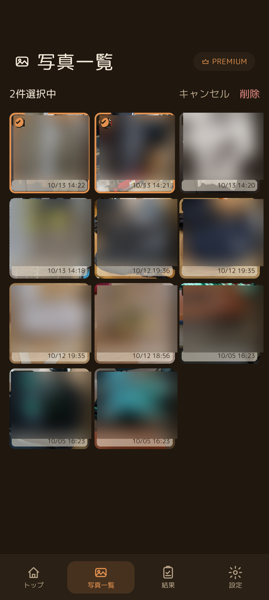

🗂️ 登録した写真の確認
下部ナビゲーションの「写真一覧」タブをタップすると、これまでに撮影した持ち物の写真が新しい順にグリッド表示されます。写真の右下には撮影日時が表示されており、いつ登録したかがすぐにわかります。

登録された写真がタイル状に並ぶ写真一覧画面（ダークモード）

清潔感のあるライトモードでも見やすく表示されます
📈 タップして開く「判定の推移グラフ」
写真一覧（または結果画面）で写真をタップすると、詳細ダイアログが開き、「判定の推移」折れ線グラフが表示されます。

モノサシをするたびに、写真の判定がどう動いたかを折れ線グラフで確認できます
1
横軸：出題された日付・セッション
モノサシ1回（スワイプセッション）ごとにポイントがプロットされ、日を追ってどう判断したかの歩みがわかります。
2
縦軸：必要 ／ なし（未確定） ／ 不要
グラフの上へ向かうほど「必要」、下へ向かうほど「不要」へと近づきます。迷っていたものが徐々に確信に変わっていくプロセスが一目瞭然です。
3
写真ごとの状態メッセージ
ダイアログ上部には「とても大切な物です これからもずっと大切にしましょう」など、現在の確定状況に応じた温かいメッセージが表示されます。
🗑️ 写真の複数選択と削除
ブレてしまった写真や、誤って撮影した写真、もう管理する必要がなくなった写真は、複数選択してまとめて削除できます。
1
写真を長押し、または「選択して削除」をタップ
画面上部が「〇件選択中」「キャンセル」「削除」の選択モードに切り替わります。
2
削除したい写真をタップ
選んだ写真の左上にオレンジ色のチェックマークが付き、枠線がハイライトされます。何枚でも同時に選択可能です。
3
右上の「削除」をタップ
確認のアラートが表示されます。「削除」を押すと、端末内から写真データが安全に削除されます。

チェックマークを付けて「2件選択中」。右上の「削除」で一括削除できます
❓ 写真一覧に関するFAQ
写真は何枚まで登録できますか？
登録枚数に制限はありません。端末のストレージ空き容量がある限り、何十枚でも何百枚でも登録して断捨離の判断を進めることができます。
削除した写真を元に戻すことはできますか？
端末内から完全に削除されるため、元に戻すことはできません。もし残しておきたい可能性がある場合は、削除せずそのままにしておくか、バックアップファイルを作成しておくことをおすすめします。